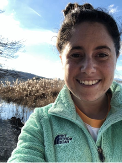

Nikki Sanderson
Postdoctoral Research Associate, Curto Lab
Division of Applied Mathematics and the Carney Institute for Brain Science
Brown University, Providence, RI
email: nicole_sanderson@brown.edu
B.A. UC Davis 2012
Ph.D. CU Boulder 2018
CV
Here is a brief bio.
Research Interests
Applied topology, dynamical systems, and information theory.
Applications to neuroscience and materials science.
Developing educational content and programs to make STEM friendly and accessible for everyone.
Publications
Software
1. Clique topology software in Python:
PyCliqueTop_2023.
Additional software can be found on my Github.
The ABCs
of topological analysis for matrix analysis @ Mathematical Approaches for Connectome Analysis Workshop. (IPAM 2024)
Panel discussion
with Q&A session | AI & Topology. (AMLD 2020)
Trailer:
Spooky Quantum Halloween Event. Corn maze generator. ( SAGE live, 2020)
A relic
from my graduate student days at CU Boulder.
"All flowers in time bend toward the sun." --
EF&JB
Page last updated on November 24, 2024.